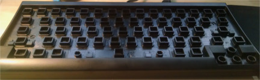
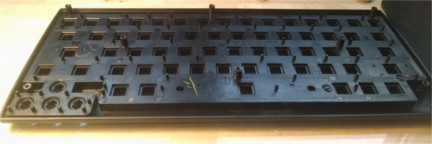
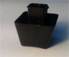
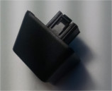
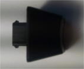
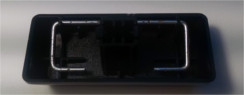

About the keyboard
Amazon's Product Image
I've used the Happy Hacking Keyboard Lite 2 since about halfway through college. I bought it because I liked its small size, and it's CAPS → Control key replacement. These features make up for the rubber dome switches it uses.
However, years of use have resulted in gunk buildup in the keyboard. I wanted to clean it up. I didn't find very helpful results while searching online, so I'll post here what I did to clean my keyboard. It's not very complicated, but some people were suggesting dishwashing the entire keyboard, electronics and all. Don't do that.
Disassembly
The keyboard is very simple to disassemble. There are 8x Phillips Head (#1) screws on the back, with one under the DIP switch instruction sticker. Remove them and the front-plate lifts off. I cut through the sticker to expose the screw.
{kind=link}
Back Plate. Note the hole cut in the DIP switch sticker.
The entire front cover and key assembly is made of plastic. There are no electronics in the front. Therefore, you can safely wash the front without damaging the keyboard. The keys are clipped into the front cover with small plastic tabs on the back. Those must be pressed in to release the keys. I pressed them in wit a pair of pliers on the end of a multi-tool. Rather than squeezing the tabs in, then pushing the key out, I instead pressed down with the tips of the pliers jaws resting on the slope of the clips, and they naturally slid down and compressed the clips. I think this was a better method than trying to compress the clips first, then push the keys out, because it prevents over-compressing the clips and breaking them off. It does mar the slopes of the clips, but it doesn't mar them very much, and the slopes are not structural. Breaking off a clip ruins the key, and I don't think replacement parts are sold.
Top Plate
{kind=link}
Top of the Front Plate without Keys
{kind=link}
Bottom of the Front Plate without Keys
Keys
{kind=link}
Side view of key
{kind=link}
Top view of key
{kind=link}
The tabs more clearly
{kind=link}
The left shift, space, and enter keys have a bent wire insert clipped in.
After taking the keys off, I was very pleased with the design of the front plate. It traps all the debris and (small) spills in the front plate, up to about a quarter inch of liquid. Of course, that trapping action is why I had to clean the keyboard, but I'd rather periodically disassemble and clean the front-plate than buy a new keyboard.
Cleaning
I cleaned the disassembled keys and front-plate in warm soapy water, scrubbing with an old toothbrush. I held off on just popping it into the dishwasher mostly because I had just run a load and it seemed wasteful to run another mostly empty. However, it does seem like the plastic castings could hold up in the dishwasher, although I'm not certain about the lettering. The front cover is marked HIPS, for "High Impact Polystyrene", which has a maximum operating temperature of 140°F and a melting point of 214°F (according to this website). GE has a page which specifies the operating temperature range of dishwashers between 120 and 150°F. If you're impatient, it probably won't melt your if you put them in the dishwasher, but I'll stick to the manual method, it wasn't that inconvenient.